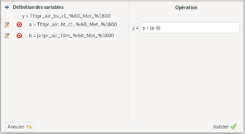
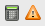

pour ouvrir la fenêtre de configuration des opérations :
pour ouvrir la fenêtre de configuration des opérations :Opération sur les données
Vista offre la possibilité d'effectuer des calculs sur les données. Cliquer sur le bouton pour ouvrir la fenêtre de configuration des opérations :

Définition des variables :
Une opération est une expression qui peut contenir des variables. Chaque variable est identifiée par une lettre. Toutes les variables qui apparaissent dans l'opération doivent être définies. Dans tous les cas la variable y est réservée au paramètre en ordonnées. Pour les tracés de type PlotXY, la variable x est également réservée au paramètre en abscisses.
Pour définir une nouvelle variable, cliquer sur le bouton  . Une boîte de saisie permet de définir la variable, de la même manière que l'on définit une donnée d'un tracé (cf § Tracé ST)
. Une boîte de saisie permet de définir la variable, de la même manière que l'on définit une donnée d'un tracé (cf § Tracé ST)

Vista nomme automatiquement la variable en fonction des lettres disponibles. Au niveau de l'ihm, chaque variable est matérialisée par une ligne :

 : permet de modifier la variable par réouverture de la boîte de définition.
: permet de modifier la variable par réouverture de la boîte de définition.
: permet de supprimer la variable.
Opération :
Une opération est une expression algébrique. Toutes les variables utilisées dans l'opération doivent avoir été définies. On peut utiliser des fonctions mathématiques standard (cf module numpy de python). Voici quelques exemples d'opérations valides :
y = y+10
y = y + a
y = sin(a)
y = sqrt(a)
Noter : la définition d'une opération sur un tracé est matérialisée par le pictogramme

. Une info bulle précise l'opération associée aux données.
Contrôles :
Au moment de valider l'oppération, Vista réalise 2 types de contrôles :
Si des erreurs sont détectées, une boîte de message apparaît.